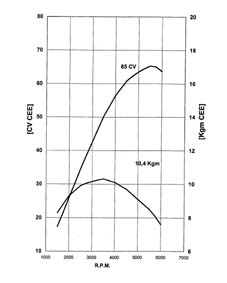
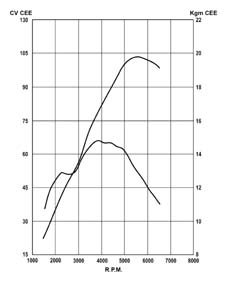
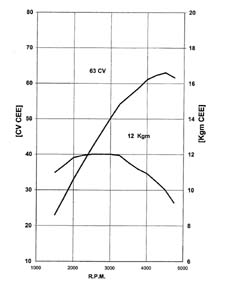
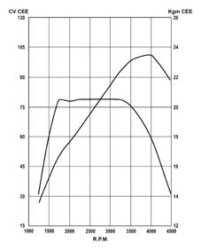

SPECIFICATIONS
- Path
- Technical Data > PROJECT DESCRIPTION AND SPECIFICATIONS > TYPICAL ENGINE CURVES > SPECIFICATIONS
- Kind
- technical data / specifications
- Applies to
- engines: 1.2 8v, 1.6 16v, 1.3 JTD 16V, 1.9 JTD 8V, 1.9 DIESEL; all production periods
- Interactive page
- https://sloeber94.github.io/elrnDB-fDbl/en/#/223000076
Applies to: engines: 1.2 8v, 1.6 16v, 1.3 JTD 16V, 1.9 JTD 8V, 1.9 DIESEL; all production periods
The power and torque curves illustrated can be obtained with the engine overhauled and run in (50 hours operation) without a fan and with an exhaust silencer and air filter fitted, at sea level.




